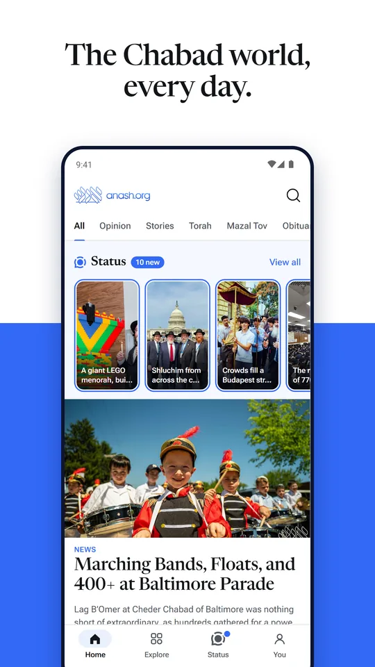
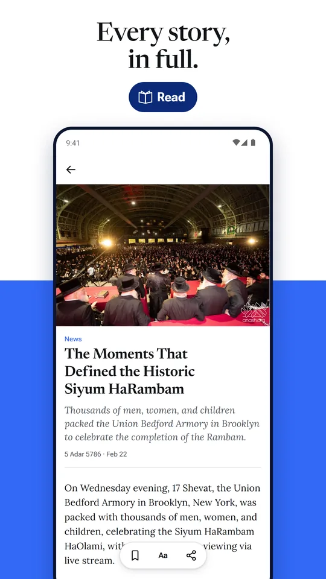
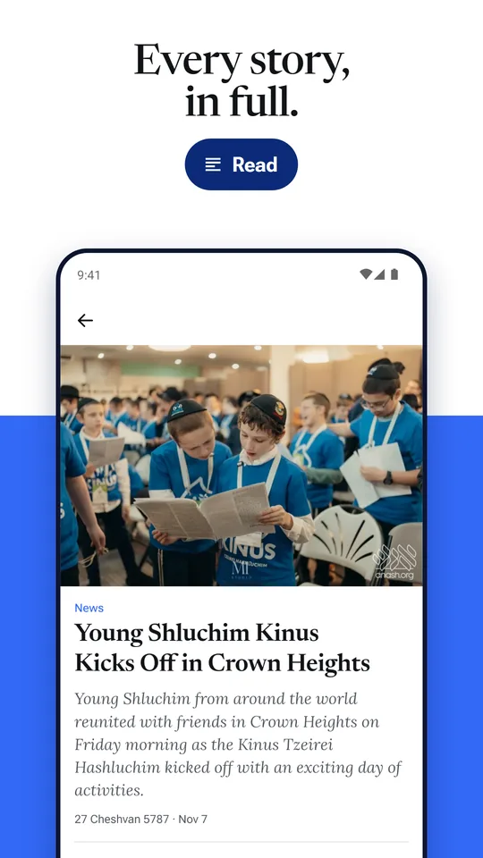
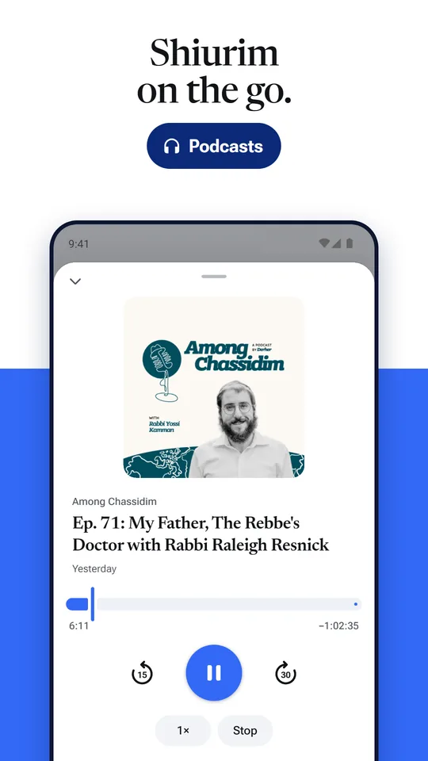
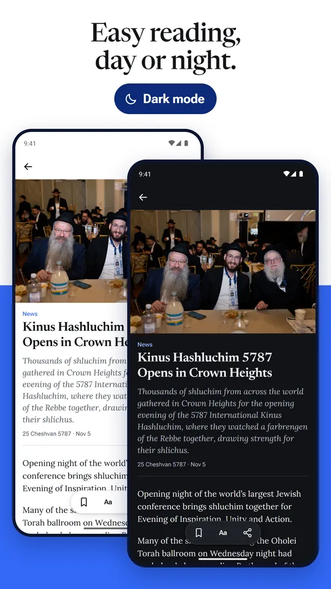
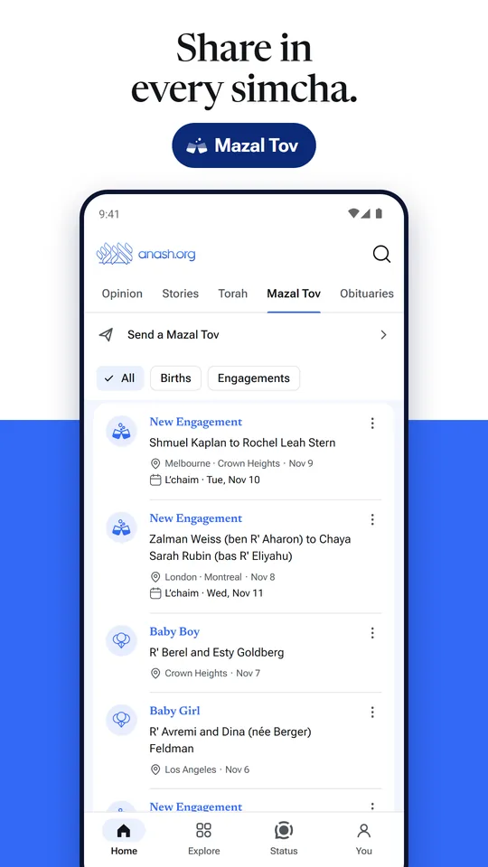

The Chabad world, every day.
The Anash.org app for Android: Chabad news as it happens, Status, shiurim, zmanim and Classifieds. Free.
Android 7 or newer · always the newest version






How to install
- Tap Download for Android. If Chrome asks, tap Download anyway.
- Tap Open when the download ends (missed it? Chrome menu ⋮ > Downloads, tap anash-app.apk). If your phone asks, tap Settings and turn on Allow from this source.
- Tap Install, then Open.
New versions: this page always has the newest one. Download it again and it installs over the old copy, with your saved stories and settings kept. Once Anash.org is on Google Play you can move there without uninstalling.
What's inside
- Every story as it goes up, with Opinion, Stories, Torah, Mazal Tov and Obituaries a tap away.
- Stories in full with their photos and videos. Save one for later or make the text bigger.
- Status: the community's photos and videos in one feed.
- Shiurim and shows that keep playing with the screen off.
- Alerts for the lead stories, every story, or only your sections.
- Zmanim, daily Chumash, Tehilim, Tanya, Hayom Yom and Rambam, Classifieds, and search across Anash.org.
iPhone: not yet. An iPhone version is planned for later.